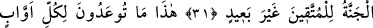

EBEDÎ YAŞAMANIN BAŞLADIĞI GÜN
30. O gün cehenneme «Doldun mu?» deriz. O da «Daha var mı?» der.
31. Cennet de takvâ sahiplerine yaklaştırılır; (onlardan) uzakta olmayacaktır.
32. İşte bu size vaad edilen cennet! Ki o, Allah’a yönelen, emirlerine riâyet eden,
33. Görmediği halde Rahmân’dan korkan ve Allah’a yönelmiş bir kalp ile gelen
kimselere mahsustur.
34. Oraya selâmetle girin. İşte bu, ebedî yaşamanın başladığı gündür.
35. Orada kendileri için diledikleri her şey vardır. Katımızda dahası da vardır.
“O gün” yani ey Rasûlüm kavmine hatırlat. Bu hatırlama kabiliyetine sahip herkese
şamildir. Sahip olduğumuz azametle “deriz” azap yurdu ve Allah’ın âsîler için
hazırladığı hapis olan “cehenneme” içine atılanlarla “doldun mu?” ve sana vaad
ettiğimi yerine getirdim mi? Bu vaad, Allah’ın “cehennemi dolduracağım” (Secde,
32/13) ve “her ikinizi de dolduracak vardır” buyruklarıdır. Allah’tan gelen bu soru,
söylediğini tasdik, vaadini tahkik, azabının ehline azar ve bütün kullarına bir uyarıdır.
Ve cehennem de “der ki” edeben soruya cevap olmak üzere ve cevap soruya muvafık
olsun diye “daha yok mu?” Yani cin ve insanlardan bana atılacak daha yok mu?
Buradaki “mezîd” ifadesi “hamîd” kelimesinde olduğu gibi masdardır.
İnsanlar bu hitap ve cevabın hakiki olup olmaması konusunda ihtilaf etmişlerdir. Bir
kısmı şöyle demiştir: “Bu ikisi; hitap ve cevap hakikidir. Allah uzuvları konuşturduğu
gibi cehennemi de bu şekilde konuşturur.” Tercih edilen görüş budur. Zira Allah her
şeye kadirdir. Âhiret işlerinin tamamı veya bir kısmı dünyada alışılagelmiş şeylerden
farklıdır. Hadisler bunun hakiki olduğuna delâlet etmiştir. Cehennemin inlemesi, haşr
gününde insanlara saldırması, meleklerin onu demir zincirlerle çekmesi ve ateşin “Ey
mü’min acele et. Senin nurun alevimi söndürdü”[256] demesi gibi konulardaki
rivâyetlerde olduğu gibi mecaza gitmenin bir veçhi yoktur. Bunlar cehennemin hakiki
olarak yaşadığına ve idrak ettiğine delalet eder. Mutlak olarak cemâdâtın bile bu tarz
bir hayatı vardır. O halde garip olay ve hareketleri kapsayan o iki yurtta (cennet ve